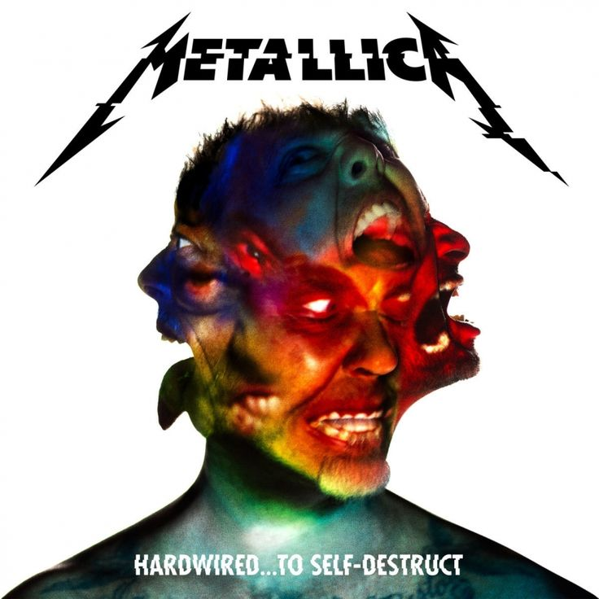

Hardwired… to Self-Destruct
2016
A Hardwired… to Self-Destruct 2016 novemberében jelent meg, és a Metallica tizedik stúdióalbuma lett. Nyolc évvel a Death Magnetic után érkezett, dupla albumként. A producer Greg Fidelman volt, aki korábban is dolgozott a zenekarral.
Zeneileg a lemez több korszak elemeit ötvözi: thrash riffek, súlyos középtempós dalok és dallamosabb részek is hallhatók. Olyan számok szerepelnek rajta, mint a „Hardwired”, a „Moth Into Flame”, a „Halo on Fire” és a „Spit Out the Bone”. A dalszövegek a személyes problémáktól a társadalomkritikáig terjednek.
A felállás stabil volt (Hetfield, Ulrich, Hammett, Trujillo), bár érdekesség, hogy Kirk Hammett nem hozott riffeket, mivel elvesztette a telefonját az ötleteivel. A lemez fogadtatása nagyon pozitív volt, világszerte sikeres lett, és egy hatalmas turné követte.
| Szám | Hossz | Írók |
|---|---|---|
| Hardwired | 3:10 | Hetfield, Ulrich |
| Atlas, Rise! | 6:30 | Hetfield, Ulrich |
| Now That We're Dead | 7:00 | Hetfield, Ulrich |
| Moth Into Flame | 5:50 | Hetfield, Ulrich |
| Dream No More | 6:30 | Hetfield, Ulrich |
| Halo on Fire | 8:15 | Hetfield, Ulrich |
| Confusion | 6:43 | Hetfield, Ulrich |
| ManUNkind | 6:55 | Hetfield, Ulrich |
| Here Comes Revenge | 7:17 | Hetfield, Ulrich |
| Am I Savage? | 6:30 | Hetfield, Ulrich |
| Murder One | 5:45 | Hetfield, Ulrich |
| Spit Out the Bone | 7:09 | Hetfield, Ulrich |